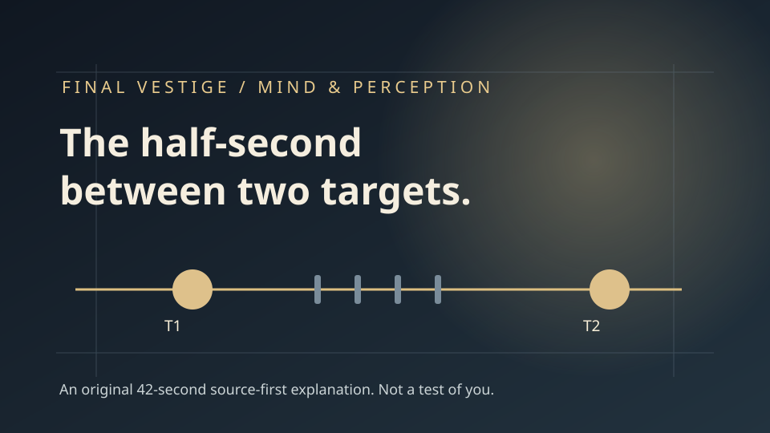

Final Vestige Studios · Independent tools under review · unpublished approval-held pilot
Before you buy twelve minutes of calm, know what the twelve minutes can prove.
A meditation recording might be convenient. Convenience is not the same thing as a laboratory-backed promise about your brain. This guide separates the actual contents of Zen12 from the claims made about its effects, so you can decide whether the format is worth evaluating.
Try the existing free Seven Day Focus Fieldbook · Read the published Change Blindness investigation
A true story of a second target that disappeared
In 1992, researchers asked volunteers to identify a first item in a rapid visual stream and detect another. For a particular brief period after the first target, the second was often not reported. Later experiments found exceptions when targets came immediately together. The interesting part is the experimental manipulation, not a general claim that everyone's mind turns off.
Separate meditation research has examined how task performance varies with training or meditative state, but those experiments did not test the Zen12 MP3s. Read the original attention study; read the advanced-meditator study.
What Zen12 says it sells
The standard Zen12 About page (seller reference: zen12.com/about) describes twelve levels of twelve-minute sessions and four listening styles: relaxation music, guided meditation, white noise and sounds of nature. The separate promotional offer (seller reference: zen12.com/secret/) describes a 48-MP3 package with extras and promotional checkout messaging. Those are distinct seller contexts; this guide is not evidence that every visitor receives the same bundle, price, coupon or refund terms.
| Audio format | Downloadable MP3s are described by the seller; actual access/fulfillment to be verified at an authorized checkout. |
|---|---|
| Session length | Twelve minutes per session, per seller description; no equivalence to an hour of meditation established. |
| Level progression | Twelve levels are advertised. The effectiveness of progression is not independently verified. |
| Listening styles | Music, guided, white noise, nature: features described by the seller, not clinical outcomes. |
| Price and returns | Dynamic offer contexts. No current checkout price, eligibility, cancellation, or final refund contract verified for a Final Vestige referral. |
Optional original 42-second explanation

Read the complete video transcript
0–7 seconds: Two moments can arrive close together. Detecting the first does not guarantee reporting the second.
7–14: In an attention experiment, a rapidly presented target is followed by another target through a stream of distractions.
14–21: When the second target follows after intervening distractors, people may report it less often.
21–28: But immediate targets can be spared; the timing and sequence matter.
28–35: Research with experienced meditators is intriguing, but it has not tested this consumer audio.
35–42: Start with an independent source. Decide what the product actually offers before deciding whether to buy.
Try the free baseline before comparing any recording
Choose a small, nonmedical task that you have been postponing. For twelve minutes, set aside notifications and work on just the first step. At the end, write down what you actually completed, what distracted you, and whether the session was usable. Repeat on a second day if you like. This is an individual planning exercise, not a brainwave experiment, attention diagnosis or expected improvement. The existing 52-page Focus Fieldbook provides the only established free follow-up and same existing Jetpack list; reading this guide never requires subscribing.
Evidence, unanswered questions and objections
Can binaural sounds objectively force brainwaves into a chosen state?
A 2023 systematic review of 14 binaural-beat EEG studies reported inconsistent findings (five supportive, eight contradictory, one mixed), with heterogeneous methods. This is not a Zen12-specific efficacy study, and does not prove the marketed automatic effects.
Does a meditation study prove this MP3 can improve attention?
No. A 2007 intensive-training study and 2014 advanced-meditator study examined particular participants, conditions and outcomes. A commercial audio program cannot borrow their results.
Will this treat stress, anxiety, sleep disorders, or another condition?
Do not rely on this guide or seller testimonials as evidence for clinical treatment. Consult a qualified clinician for health concerns; do not replace indicated care with an audio product.
What if I dislike the sound, need captions, or cannot use headphones?
Check preview availability, accessibility, practical listening conditions and seller instructions. The standard About page says headphones are not required and advises against use while driving/operating machinery. Those are seller statements; verify current warnings for the exact offer.
Why not simply use a free routine?
You can. A structured free routine may be adequate if your goal is allocating twelve minutes. A buyer might value ready-made selectable audio formats, but that preference is not a scientifically demonstrated advantage.
What about price, return window and support?
Current checkout amounts, bundle-specific eligibility, refund exclusions, billing jurisdiction and support paths have not been authenticated for a Final Vestige-authorized referral. Compare the actual contract at checkout, not a coupon countdown or stale snapshot.
What would change the recommendation?
A verified partner acceptance and authorized specific offer; verified checkout/refund terms; independent product-specific research for any asserted outcome; and a clear accessible no-autoplay buying experience. Until then, an external commerce CTA is withheld. The existence of a seller's page or affiliate-network landing page does not grant publisher rights.